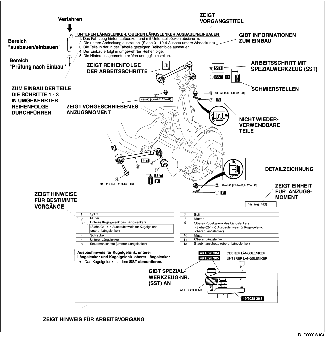

• Dieses Handbuch erläutert die Vorgänge für die erforderlichen Wartungs- und Reparaturarbeiten. Die Erklärung ist in die folgenden 5 grundlegenden Vorgänge aufgeteilt:
• Vorgänge, die augenfällig sind bzw. bei geschultem Werkstattpersonal vorausgesetzt werden können, (d.h. der Ausbau/Einbau gewisser Teile, Aufbocken des Fahrzeugs, Anheben des Fahrzeugs mit einer Hebebühne, Reinigung von Teilen und Sichtprüfungen) wurden daher weggelassen.
1. Die meisten Reparaturverfahren werden mit einer Gesamtansicht eingeleitet. Aus dieser sind die einzelnen Bauteile und ihre Anordnung sowie visuelle Prüfungen ersichtlich. Schriftliche Anweisungen für Aus- und Einbauverfahren sind nur aufgeführt, wenn ein Vorgehen in mehreren Schritten erforderlich ist.
2. Nicht wiederverwendbare Teile, Anzugsmomente und Symbole für Öl, Schmierfett und Dichtmittel werden in der Darstellung angegebenen. Zusätzlich werden auch Symbole angezeigt, die die Verwendung von Spezialwerkzeugen oder Ähnlichem erfordern.
3. Die Arbeitsschritte sind nach ihrer Reihenfolge nummeriert und die betroffenen Teile in der Abbildung sind mit der entsprechenden Nummer versehen. Gelegentlich gibt es wichtige Punkte oder zusätzliche Informationen zu einem Arbeitsschritt. Diese Informationen bei Arbeiten an den jeweiligen Teilen berücksichtigen.

• Es gibt acht Symbole, die für Öl, Fett, Flüssigkeiten, Dichtmittel und den Gebrauch eines SST oder ähnlichem stehen. Diese Symbole zeigen die Anwendungspunkte an oder den Gebrauch dieser Materialien während der Servicearbeiten.
• In diesem Handbuch sind wichtige Sicherheits- und Arbeitshinweise unter den Titeln Vorsicht, Achtung, Hinweis sowie Sollwerte und Obere und untere Grenzwerte aufgeführt.